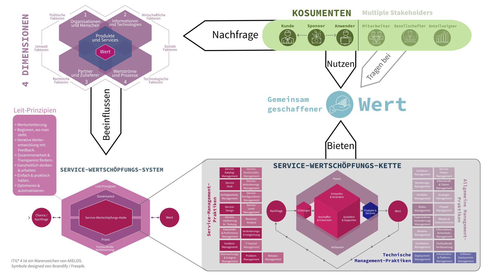
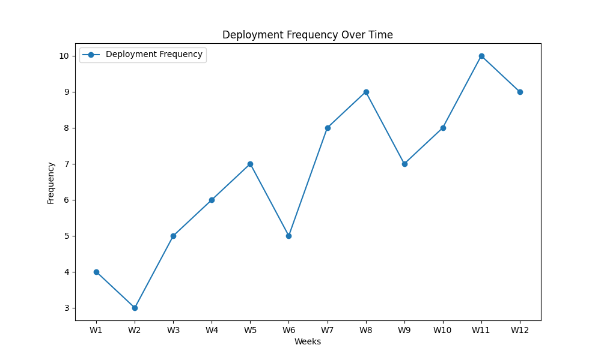
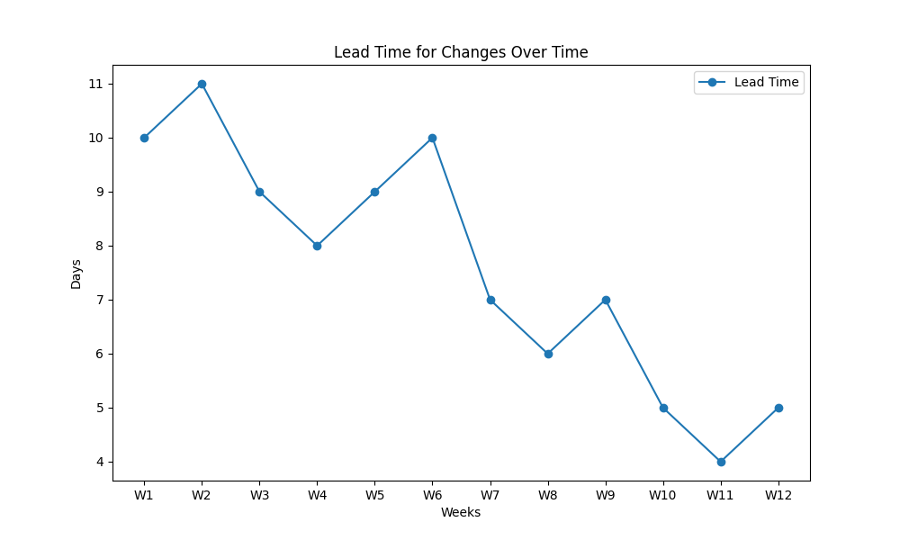
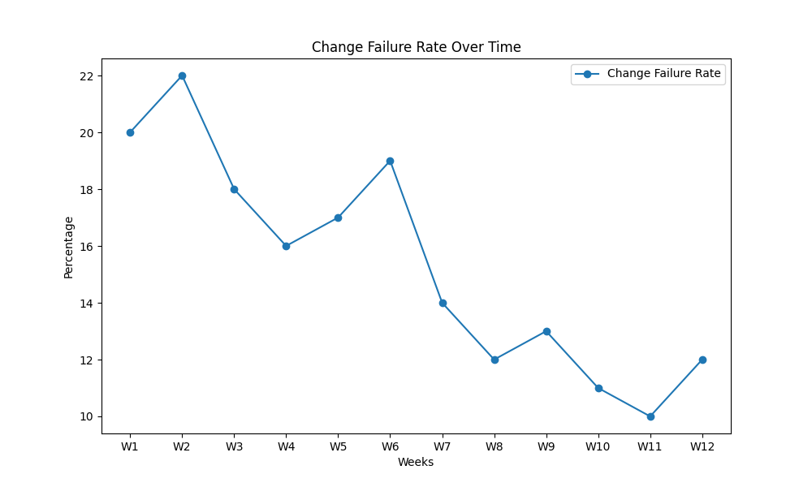
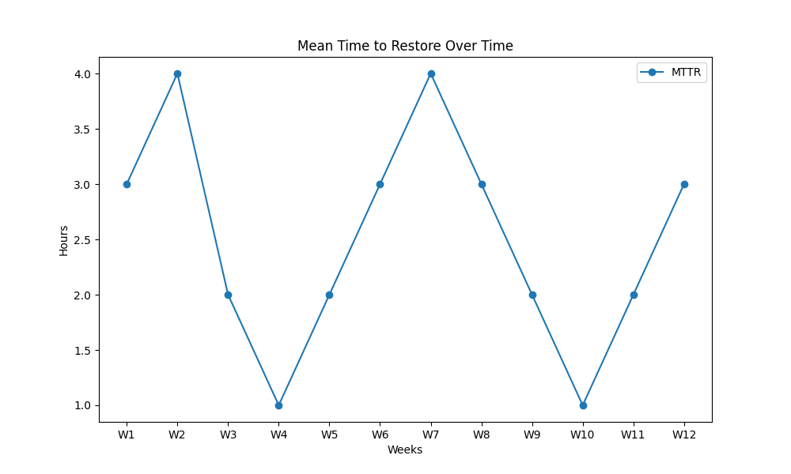

Unabhängiges ITIL-4-Lernangebot · Service Value Chain
IT-Service-Werkstatt
Verstehe, wie aus Bedarf ein wertvoller Service wird. Entscheide selbst, welche IT-Service-Management-Practices du in deinem Berufsalltag benötigst.
Erwarteter Wert
Ausgangswert → Zielwert
Rahmen
Das Modell
Die Service Value Chain
Ergänzende Übersichtsgrafik aus dem Repository anzeigen

Selbst erstelltes Originalmaterial aus dem Repository; ergänzende Übersicht zur interaktiven Lernkarte.Selbst erstellte DORA-Kennzahlen-Grafiken anzeigen
Die folgenden Abbildungen aus dem Repository veranschaulichen Kennzahlen, mit denen sich Entwicklung und Betrieb gemeinsam auswerten lassen. Sie sind ergänzende Vertiefung, keine zwingenden Lernstationen.

Deployment-Frequenz

Lead Time for Changes

Change Failure Rate

Wiederherstellungszeit (MTTR)
Wissen und Zusammenhänge
Passende Practices
Wähle eine Practice, um zu erfahren, wie sie in der Arbeit helfen kann.
Beteiligte Organisationseinheiten
Entscheidung im Projekt
Was würdest du tun?
Handlungsorientierung
Dein Arbeitsauftrag
Dein Entscheidungspapier
Untersuche deinen tatsächlich gewählten Weg und die Übergaben zwischen Teams. Nicht jede Aktivität muss besucht werden; Wiederholungen sind möglich. Die Simulation ist keine offizielle Prüfung.